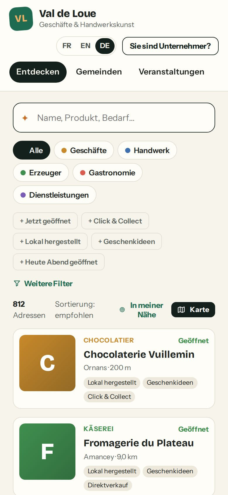

terricom.frPrésentation aux élus
tterricom.
Le territoire, en vitrine.
Une plateforme pour faire vivre l'économie locale, de la communauté de communes jusqu'au commerce du coin de la rue.
Gratuit pour
chaque commerce
Communauté de communes→
Communes→
Commerces et entreprises→
Habitants
Le constat
Nos commerces sont sur Internet en pièces détachées.
?
Des horaires faux
La fiche Google n'est pas à jour : le client trouve porte close et ne revient pas.
…
Des pages à l'abandon
Une page Facebook ouverte un jour, jamais mise à jour depuis.
€
Pas de site
Trop cher, trop long, trop technique pour un artisan ou un petit commerce.
Et vous ?
La collectivité n'a aucune vue d'ensemble de son tissu économique, et peu de moyens pour l'animer.
La réponse
Une vitrine commune, animée par la collectivité.
- 1Une fiche pour chaque commerceCréée d'avance et offerte : horaires, photos, téléphone, plan.
- 2Un portail à vos couleursTout le territoire sur une seule adresse, sur ordinateur et téléphone.
- 3Des outils pour animerCampagnes, circuits, agenda, lettre aux habitants, toute l'année.
Le fil de cette présentation
Du territoire jusqu'au comptoir.
1Communauté de communespilote, anime et mesure la vie économique de tout le territoire
2Communesrelaient, organisent leurs opérations, parlent à leurs habitants
3Commerces et entreprisesse montrent, publient, gagnent des clients
4Habitants et visiteurstrouvent, sortent et achètent local
À chaque niveau, les fonctions montent en puissance. Et à chaque étape, terricom vous accompagne.
1
Chapitre 1
La communauté de communes : piloter et animer.
Voir, lancer, mesurer : le poste de pilotage de l'économie locale.
Communauté de communesvous êtes ici
Communes
Commerces
Habitants
Communauté de communes · Tableau de bord
D'un coup d'œil, la santé du commerce local.
- 1Où en est-on ?Commerces inscrits, fiches complètes, face à l'objectif fixé.
- 2La météo du commerceUn résumé clair de la semaine, commune par commune.
- 3La carte du territoireOù se concentrent les activités, où elles manquent.
- 4Le podium des communesQui avance vite, qui a besoin d'un coup de pouce.
Votre espace collectivité
Communauté de communes · Entreprises
Toutes les entreprises en ligne dès le premier jour.
- 1Le portail n'est jamais videNous reprenons le registre officiel des entreprises : chaque fiche est créée d'avance.
- 2Des invitations prêtes à l'envoiPar email ou par courrier imprimé, pour que chaque commerçant réclame sa fiche.
- 3Vous gardez la mainVous validez chaque demande et suivez la qualité des fiches.
Votre espace collectivité · Entreprises
Valider une demande
Un commerçant réclame sa fiche : vous validez.
Votre espace collectivité · Revendications
- 1Les demandes en attenteChacune avec son niveau de confiance : risque faible, à vérifier…
- 2Les vérifications faites pour vousNuméro d’entreprise, adresse email, téléphone : tout est comparé.
- 3L’historique de la ficheQui a fait quoi, et quand.
- 4Un clic pour déciderValider, demander un justificatif ou refuser.
Communauté de communes · Campagnes
Des campagnes clés en main.
- 1« Noël chez vos commerçants »Une page dédiée, les commerces participants, leurs offres, un calendrier de l'Avent.
- 2Préparée en une phraseVous décrivez l'idée, l'assistant propose dates, participants et textes. Vous validez.
- 3Affiches et QR codesÀ imprimer pour les vitrines, sans graphiste.
Votre espace collectivité · Campagnes
L’assistant de campagne
Une phrase, et la campagne est prête.
Votre espace collectivité · Campagnes
- 1Votre idée« Mettre en avant les producteurs locaux avant Noël. »
- 2Les participants40 producteurs choisis, fiches complètes en priorité.
- 3La page de la campagneTitre et texte rédigés, avec de vrais noms de commerces.
- 4Le calendrierInvitations, mise en ligne, lettre aux habitants, réseaux sociaux.
- 5Vous décidezCréer, ajuster la sélection, inviter les producteurs.
Communauté de communes · Lettre d'information
Une lettre aux habitants, sans y passer la journée.
- 1Composée pour vousLes nouveautés de la semaine sont reprises automatiquement ; vous ajustez.
- 2Envoyée aux bonnes personnesLes habitants d'une commune, les touristes, les entreprises, les amateurs de circuits.
- 3Dans les règlesInscription confirmée par email, désinscription en un clic.
Votre espace collectivité · Newsletter
Communauté de communes · Circuits
Des circuits qui font sortir les habitants.
- 1Un parcours à suivreSept étapes gourmandes le long de la rivière, sur une carte.
- 2Un passeport à tamponnerLe visiteur scanne le QR code en vitrine, étape après étape, sur son téléphone.
- 3Une récompense5 tampons = un panier garni. Vous suivez les passeports ouverts et les paniers gagnés.
312 passeports · 59 paniers
Communauté de communes · Statistiques
Mesurer, comprendre, rendre compte.
- 1Les chiffres qui comptentVisiteurs, appels aux commerces, itinéraires demandés.
- 2L'évolution mois par moisDepuis le lancement, pour voir l'effet de chaque action.
- 3Ce que cherchent les habitants« boulangerie ouverte dimanche », « cordonnier »… et ce qui manque sur le territoire.
- 4Un rapport pour le conseilEn un clic, un document prêt à présenter.
Votre espace collectivité · Statistiques
Communauté de communes · Personnalisation
Votre portail, à vos couleurs.
- 1Votre identitéLogo, couleurs, textes d'accueil : l'aperçu se met à jour en direct.
- 2Votre adressePar exemple commerces.votreterritoire.fr, avec sécurité automatique.
- 3Votre équipeVous invitez vos agents et les mairies, chacun avec ses droits.
Votre espace collectivité · Personnalisation
2
Chapitre 2
La commune : sa vitrine, ses opérations.
Chaque mairie a sa place, sans licence supplémentaire.
Communauté de communes
Communesvous êtes ici
Commerces
Habitants
Commune · Sa page
Chaque commune a sa vitrine.
- 1Ses commerces en chiffres214 professionnels à Ornans : commerces, artisans, producteurs, restaurants…
- 2Son actualitéLes nouvelles de ses commerces, en direct.
- 3Le mot de la mairieUn message des élus, et les opérations commerciales en cours.
valdeloue.terricom.fr/ornans
Commune · Qui fait quoi
La mairie garde la main.
Une commune membre n'achète pas de seconde licence : ses agents reçoivent un accès à leur commune.
La communauté de communes
- ✓voit tout le territoire
- ✓lance les grandes campagnes (Noël, rentrée…)
- ✓valide les commerçants et anime les circuits
La mairie
- ✓voit les entreprises de sa commune
- ✓crée ses propres opérations (« Quinzaine commerciale d'Ornans »)
- ✓écrit à ses habitants et participe aux campagnes du territoire
Pas de 2ᵉ licence
L’espace de la mairie
La mairie d’Ornans chez elle.
Espace mairie d’Ornans · Tableau de bord
- 1Sa commune seulement214 établissements, 153 fiches déjà réclamées.
- 2La météo de son commerceUn résumé simple de la semaine à Ornans.
- 3Ses commerces sur la carteRue par rue, quartier par quartier.
- 4Les activités qui avancentLibraires, apiculteurs, informaticiens…
Les opérations de la mairie
Ses opérations, et celles du territoire.
Espace mairie d’Ornans · Campagnes
- 1Son opération« Quinzaine commerciale d’Ornans », créée et gérée par la mairie.
- 2Les campagnes du territoireVisibles, pour y faire participer ses commerces, sans pouvoir les modifier.
- 3L’assistant aussiLa mairie prépare ses propres opérations en une phrase.
Commune · La vie locale
Agenda, marchés, emploi : la vie locale au même endroit.
Marchés, fêtes, ateliers. L'agenda de l'office de tourisme est repris automatiquement : rien à ressaisir.
« Travailler sur notre territoire ». Les offres d'emploi, de stage et de saison des entreprises locales.
3
Chapitre 3
Le commerce : sa vitrine en quelques minutes.
Gratuit pour exister. Des options pour aller plus loin.
Communauté de communes
Communes
Commercesvous êtes ici
Habitants
Commerce · La fiche offerte
Une fiche complète, offerte par la collectivité.
- 1Ouvert ou fermé ?Calculé à la minute, jours fériés compris.
- 2Appeler, venirUn geste pour téléphoner ou lancer l'itinéraire.
- 3Bien placée sur GoogleChaque fiche est préparée pour les moteurs de recherche.
…/ornans/boulangerie/boulangerie-martin
Commerce · Prendre sa fiche en main
Réclamer sa fiche en trois étapes.
1
Je retrouve ma fiche
Elle existe déjà : je la cherche par mon nom et je clique sur « Gérer cette entreprise ».
2
Je prouve que c'est moi
Mon numéro d'entreprise, puis un justificatif ou un code reçu par courrier ou par SMS.
3
La collectivité valide
Et la vitrine est à moi : je complète, je publie, je suis mes résultats.
Bienvenue Sophie, la vitrine est à vous !Le ton de la plateforme : simple, chaleureux, jamais technique.
Réclamer sa fiche
Deux écrans, deux minutes.
terricom.fr/pro/revendiquer
1Il tape le nom de son commerce… 2et clique sur « C’est moi ».
terricom.fr/pro/revendiquer · vérification
3Il vérifie les informations déjà connues… 4et confirme. La collectivité valide ensuite.
Commerce · Son tableau de bord
Un tableau de bord qui dit quoi faire.
- 1Des encouragements« Bonjour Sophie, belle semaine : +17 % de vues. »
- 2Les prochaines actionsAjouter des photos, confirmer ses horaires de la Toussaint…
- 3Les résultatsVues, appels, itinéraires, scans du QR code en vitrine.
- 4L'invitation de la collectivité« Participez à Noël chez vos commerçants » en un clic.
Espace professionnel · Tableau de bord
Le kit vitrine
Le kit vitrine, prêt à imprimer.
Espace professionnel · Kit vitrine & QR code
- 1Aux couleurs choisiesVert, crème ou nuit : trois styles d’affichette.
- 2L’affichette de vitrine« Retrouvez-nous en ligne ! », au nom du territoire.
- 3Le QR codeScanné en vitrine, il ouvre la fiche… et tamponne le passeport du circuit.
- 4Tout à téléchargerAffichette, autocollant, carte de visite.
- 5Les scans comptés118 scans ce mois pour la boulangerie.
Commerce · Publier
Publier une nouveauté en une phrase.
- 1Le commerçant écrit une phrase« Nouvelle collection de printemps en magasin. »
- 2L'assistant rédige pour luiLe texte de la fiche, Facebook, Instagram, un email aux clients. Il relit et valide.
- 3Diffusé partoutSur sa fiche, la page de sa commune, le portail du territoire et la lettre.
Espace professionnel · Publications
L’assistant de rédaction
Une phrase, quatre textes prêts.
Espace professionnel · Publications
- 1Ce que le commerçant écrit« Galettes comtoises au beurre AOP tout le week-end. »
- 2Pour sa ficheUn texte clair et informatif.
- 3Pour FacebookChaleureux, avec une invitation à passer.
- 4Pour Instagram et LinkedInChacun dans son style. Il copie ou publie.
- 5Son calendrierLes publications programmées du mois.
Commerce · Monter en puissance
Chacun avance à son rythme.
Essentiel
0 €
Exister · offert par la collectivité
Fiche complète, photos, horaires, carte, QR code vitrine, 3 publications par mois, statistiques essentielles.
Premium
24 €
Gagner du temps · HT par mois
Tout l'Essentiel, plus : assistant de rédaction illimité, publications programmées, prise de rendez-vous, formulaires de devis, offres d'emploi, présence dans la lettre du territoire, statistiques détaillées.
Communication
49 €
Fidéliser · HT par mois
Tout le Premium, plus : ses clients abonnés et ses propres lettres, publication sur les réseaux sociaux, un mini-site à ses couleurs.
Son site, sans le créer
Aucune carte bancaire n'est demandée pour l'offre Essentiel. Les options sont un choix libre du commerçant.
Mon offre
Le commerçant choisit lui-même.
Espace professionnel · Mon offre
- 1Essentiel, offertFinancé par la communauté de communes : c’est l’offre actuelle.
- 2PremiumPour gagner du temps et des clients.
- 3CommunicationPour fidéliser et avoir son mini-site.
- 4Un bouton pour changerSans engagement ; la fiche reste gratuite pour toujours.
Commerce · Le mini-site
Son propre site, sans avoir à le créer.
…/ornans/caviste/la-cave-comtoise
- 1À ses couleursLa Cave Comtoise choisit son bordeaux ; la lisibilité est vérifiée automatiquement.
- 2Ses pages« Dégustations du samedi », « Coffrets entreprises »…
- 3Son bouton principal« Commander un coffret », appeler, réserver, demander un devis.
4
Chapitre 4
Les habitants : trouver, sortir, acheter local.
Tout ce travail se voit ici, sur le téléphone de chacun.
Communauté de communes
Communes
Commerces
Habitantsvous êtes ici
Habitants · Chercher
Chercher comme on parle, trouver en trois gestes.
- 1« Un fromage à offrir »Pas besoin de connaître la bonne rubrique : la recherche comprend la question.
- 2« Ouvert maintenant »Un geste pour ne voir que ce qui est ouvert, ou ouvert ce soir.
- 3La carte du territoireLes commerces, les marchés, les événements, autour de soi.
valdeloue.terricom.fr/explorer
Habitants · Partout, pour tous
Dans la poche, et pour tout le monde.
- 1Une applicationLe portail s'installe sur l'écran d'accueil, sans passer par un magasin d'applications.
- 2Trois languesFrançais, anglais, allemand : pour les touristes aussi.
- 3Accessible à tousConforme aux règles d'accessibilité des services publics.

Auf Deutsch !
En résumé
Ce que chacun y gagne.
La communauté de communes
Une vue d'ensemble, des campagnes clés en main, des chiffres pour le conseil.
La commune
Sa vitrine, ses opérations, sa lettre, sans licence supplémentaire.
Le commerce
Une présence gratuite et bien placée, des clients en plus, du temps gagné.
L'habitant
La bonne adresse, ouverte, au bon moment. Et l'envie de sortir.
=Un commerce local plus visible, un territoire plus vivant, une collectivité qui pilote.
5
Chapitre 5
terricom vous accompagne.
Une solution, et une équipe : mise en service, formation, assistance, hébergement en France.
t
Accompagnement · Mise en service
Un mois pour lancer, on s'occupe de tout.
S1Création
Votre territoire, vos communes, votre adresse.
S2Import
Toutes vos entreprises, vos couleurs, vos rubriques.
S3Formation
Vos agents et les mairies prennent l'outil en main.
S4Invitations
Chaque commerçant reçoit un courrier ou un email.
★Lancement
Une première campagne, une première lettre, la presse locale.
EnsuiteLes relances des fiches incomplètes sont automatiques, et nous restons à vos côtés pour chaque nouvelle campagne.
Calendrier indicatif, ajusté avec chaque collectivité.
Accompagnement · Assistance
Jamais seuls face à l'outil.
?
Une aide à portée de clic
Une question, un souci ? Vous écrivez depuis votre espace, notre équipe vous répond et suit la demande jusqu'au bout.
✉
Les commerçants accompagnés
Courriers d'invitation, kit vitrine avec affichette et QR code, conseils pour compléter sa fiche.
⚑
Une intervention encadrée
Notre équipe n'entre dans votre espace que pour une demande précise, 30 minutes au plus, avec votre accord, et tout est tracé.
Des nouveautés régulières, sans rien installer : la plateforme évolue pour tous les territoires en même temps.
Aide et support
Une question ? Une réponse suivie.
Votre espace collectivité · Aide & support
- 1Une nouvelle demandeDepuis votre espace, en quelques lignes.
- 2Le suiviChaque demande garde son état : en cours, en attente, résolue.
- 3La réponse de l’équipeUn vrai interlocuteur, avec des conseils concrets.
Accompagnement · Confiance
Hébergé en France, protégé, conforme.
FR
Hébergé en France
Vos données restent en France, chez un hébergeur français.
3
Toujours disponible
Trois centres de données : si l'un s'arrête, le service continue.
30 j
Sauvegardé en continu
Retour possible à n'importe quel moment des 30 derniers jours.
2×
Accès protégés
Double vérification à la connexion, chacun ne voit que ce qui le concerne.
RGPD : vous restez maîtres
Données conservées le temps nécessaire puis effacées, droits des habitants respectés, mesure d'audience sans cookie : pas de bandeau à imposer.
Tout est tracé
Chaque action importante est enregistrée dans un journal que personne ne peut modifier.
Sécurité du compte
Des accès bien protégés.
- 1La double vérificationUn code sur le téléphone en plus du mot de passe.
- 2Obligatoire pour les agentsElle ne peut pas être désactivée par erreur.
- 3Les connexions visiblesChaque appareil connecté est listé.
- 4Déconnecter à distanceUn téléphone perdu ? Un clic suffit.
Accompagnement · Intelligence artificielle
L'intelligence artificielle : un assistant, pas un pilote.
✎
Elle propose
Un texte de publication, une description de fiche, une idée de campagne, une traduction.
✓
Vous décidez
Rien n'est publié ni envoyé sans être relu et validé par une personne.
⛨
Sans risque
Aucune donnée personnelle des habitants ne lui est confiée, et tout fonctionne aussi sans elle.
Désactivable pour votre territoire
Budget
Qui paie quoi ? Simple et prévisible.
La collectivité
6 000 à 15 000 €
HT par an pour une communauté de communes, toutes ses communes incluses.
1 200 à 2 400 €
HT par an pour une commune indépendante.
2 000 à 8 000 €
HT, une fois : mise en service, import, formation, lancement.
Les commerces et entreprises
0 €
pour leur fiche complète, sans carte bancaire.
Ceux qui veulent aller plus loin choisissent librement une option : Premium à 24 € HT par mois, Communication à 49 € HT par mois.
Ordres de grandeur, ajustés selon la taille du territoire.
Les tarifs
Des tarifs publics et clairs.
- 1Le principeLa collectivité finance, les professionnels en profitent gratuitement.
- 2La licence du territoireSelon le nombre de communes et d’établissements.
- 3Tout est inclusPortail, carte, campagnes, lettres, hébergement en France, sauvegardes, assistance, mises à jour.
Le territoire pilote
Le Val de Loue, déjà en vitrine.
813
fiches créées dès le lancement
24
communes réunies sur un même portail
42
commerces dans la campagne de Noël
5 425
abonnés à la lettre d'information
Demain,votre territoire. La démonstration est disponible dès aujourd'hui, avec chaque espace ouvert.
Chiffres du jeu de démonstration du territoire pilote.
tterricom.
Prochaine étape : une démonstration
sur votre territoire.
1 · Démonstration
2 · Choix du périmètre
3 · Mise en service
terricom.fr
Le territoire, en vitrine.
← → pour naviguer · F pour le plein écran